UDN
Search public documentation:
FBXStaticMeshPipelineKR
English Translation
日本語訳
中国翻译
Interested in the Unreal Engine?
Visit the Unreal Technology site.
Looking for jobs and company info?
Check out the Epic games site.
Questions about support via UDN?
Contact the UDN Staff
日本語訳
中国翻译
Interested in the Unreal Engine?
Visit the Unreal Technology site.
Looking for jobs and company info?
Check out the Epic games site.
Questions about support via UDN?
Contact the UDN Staff
FBX 스태틱 메시 파이프라인
개요
- 스태틱 메시는 물론 텍스처를 포함한 머티리얼까지
- 커스텀 콜리전
- 멀티 UV 세트
- 스무딩 그룹
- 버텍스 컬러
- LOD
- 멀티 스태틱 메시(를 임포트시 하나의 메시로 합치는 것도 가능)
일반 셋업
피벗 포인트
언리얼 엔진에서 메시의 피벗 포인트는 트랜스폼 (트랜슬레이션, 로테이션, 스케일) 적용 기준점을 결정합니다. 피벗 포인트는 3D 모델링 어플리케이션에서 익스포트할 때 항상 원점 (0,0,0) 에 위치합니다. 이때문에 원점 위치에 메시를 만드는 것이 좋으며, 일반적으로 메시의 한 쪽 코너에 원점을 맞춰야 언리얼 에디터 안에서 그리드 스내핑 정렬이 가능합니다.
피벗 포인트는 3D 모델링 어플리케이션에서 익스포트할 때 항상 원점 (0,0,0) 에 위치합니다. 이때문에 원점 위치에 메시를 만드는 것이 좋으며, 일반적으로 메시의 한 쪽 코너에 원점을 맞춰야 언리얼 에디터 안에서 그리드 스내핑 정렬이 가능합니다.

트라이앵글화
언리얼 엔진의 메시는 트라이앵글로 만들어 줘야 하는데, 그래픽 하드웨어는 트라이앵글만 취급하기 때문입니다. 메시가 트라이앵글화 되었는지 확인할 수 있는 방법은 여럿 있습니다.
메시가 트라이앵글화 되었는지 확인할 수 있는 방법은 여럿 있습니다.
- 메시를 트라이앵글로만 모델링 - 최적의 해결책으로, 최종 결과물에 대해 최상의 콘트롤이 가능합니다.
- 3D 앱에서 메시 트라이앵글화 - 좋은 해결책으로, 익스포트 전에 정리(cleanup)와 수정이 가능합니다.
- FBX 익스포터로 메시를 트라이앵글화 - 괜찮은 해결책으로, 정리는 안되나 단순한 메시엔 괜찮습니다.
- 임포터로 메시를 트라이앵글화 - 괜찮은 해결책으로, 정리는 안되나 단순한 메시엔 괜찮습니다.

UV 텍스처 좌표
언리얼 엔진 3 의 FBX 파이프라인에는 멀티 UV 세트 임포트가 지원됩니다. 스태틱 메시의 경우 보통 디퓨즈용 UV 세트 하나와 라이트맵과 함께 사용할 겹치지 않는 별도의 UV 세트 또하나를 처리하는 데 사용됩니다. FBX 파이프라인을 사용하는 스태틱 메시용 UV 를 셋업하는 데 있어 까다로운 조건은 없습니다. 그러나 스태틱 메시를 가지고 UV 를 셋업할 때 일반적으로 고려해야 할 것은 약간 있습니다. 스태틱 메시용 UV 셋업 관련 세부사항은 Light Map Unwrapping KR 페이지를 참고하시기 바랍니다.노멀 맵 만들기
대부분의 모델링 어플리케이션에서 저해상도 렌더 (로우폴) 메시와 고해상도 디테일 (하이폴) 메시 둘 다 생성하여, 메시용 노멀 맵을 직접 만들 수 있습니다. 고해상도 디테일 메시의 지오메트리는 노멀맵의 노멀을 생성하는 데 사용됩니다. 정확한 노멀 맵 생성 절차에 대해서는 소프트웨어의 문서를 참고하시기 바랍니다.
고해상도 디테일 메시의 지오메트리는 노멀맵의 노멀을 생성하는 데 사용됩니다. 정확한 노멀 맵 생성 절차에 대해서는 소프트웨어의 문서를 참고하시기 바랍니다.
머티리얼
외부 어플리케이션에서 모델링한 메시에 적용된 머티리얼은 메시와 함께 익스포트되어 언리얼 에디터로 임포트됩니다. 텍스처를 별도로 임포트해온 다음 머티리얼을 만들어 적용해 주는 등의 작업을 할 필요가 없으니 프로세스가 물흐르듯 흐릅니다. FBX 파이프라인을 사용하면 이러한 모든 작업이 임포트 프로세스에서 가능합니다. 머티리얼을 별도로 셋업해줘야 할 때도 있는데, 메시에 머티리얼이 여럿 있거나 (캐릭터 모델에서 머티리얼 0 은 바디고, 머티리얼 1 은 머리여야 할 때처럼) 그 순서가 중요할 경우입니다. 익스포트용 머티리얼 셋업 관련 세부사항은 FBX Material Pipeline KR 페이지를 참고하시기 바랍니다.콜리전
단순화된 콜리전 지오메트리는 게임내 콜리전 감지 최적화에 중요합니다. 언리얼 엔진 3 는 스태틱 메시 에디터 안에서 콜리전 지오메트리를 만들 수 있는 기본 툴을 제공하고 있습니다. 그래도 상황에 따라서는 3D 모델링 어플리케이션에서 커스텀 콜리전 지오메트리를 만들어 렌더 메시로 익스포트해 주는 것이 나을 수도 있습니다. 보통 트였거나 오목한 부분이 있어 충돌없는 부분이 있는 메시가 그렇습니다. 예를 들어:- 출입구 메시
- 창문 부분을 도려낸 벽 메시
- 기이한 모양의 메시
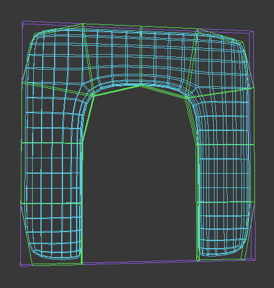
콜리전 메시는 그 이름에 따라 임포터로 식별됩니다. 콜리전 이름 문법은:- UBX_[렌더 메시 이름] - 박스는 맥스에서 Box 오브젝트 타입으로, 마야에서 Cube 폴리곤 프리미티브로 만든 것입니다. 버텍스를 옮기거나 변형시켜서 사각형 프리즘 이외의 것으로 만들거나 할 수 없으며, 그렇게 되면 작동하지 않습니다.
- USP_[렌더 메시 이름] - 구체는 Sphere 오브젝트 타입으로 만든 것입니다. 구체는 세그먼트(분절)이 전혀 많을 필요가 없는데 (8 정도면 충분), 콜리전용 진짜 구체로 변환되기 때문입니다. 박스와 마찬가지로 개별 버텍스를 옮길 수 없습니다.
- UCX_[렌더 메시 이름] - 컨벡스(볼록) 오브젝트는 어떠한 형태든 완전히 닫힌 3D 모양입니다. 예를 들어 박스 역시도 컨벡스 오브젝트가 될 수 있습니다. 아래 그림은 어느 것이 컨벡스이고 아닌지를 나타내 줍니다:

렌더 메시 이름 은 3D 프로그램에서 콜리전 메시가 연결되어 있는 렌더 메시의 이름과 같아야 합니다. 즉 3D 프로그램에 Tree_01 이라는 이름의 렌더 메시가 있다면, 씬에서 그 메시와 함께 콜리전 메시는 UCX_Tree_01 이라는 이름으로 있어야 하고, 같은 FBX 파일로 렌더 메시와 함께 익스포트해야 합니다.
참고로 구체는 현재 리짓 바디 콜리전과 언리얼의 (무기 등) 0-규모 트레이스에만 사용되며, (플레이어 이동 등) 0-이외-규모 트레이스에는 사용되지 않습니다. 또한 구체와 박스는 스태틱 메시가 균등 스케일 조절되지 않은 경우에도 작동하지 않습니다. 일반적으로 UCX 프리미티브를 만드는 것이 좋습니다.
콜리전 오브젝트 구성이 완료되면 그래픽과 콜리전 메시 둘 다를 같은 .FBX 파일에 익스포트할 수 있습니다. .FBX 파일을 언리얼 에디터로 임포트할 때, 콜리전 메시를 찾은 다음 거기서 그래픽을 제거하고 콜리전 모델로 변환시킵니다.
주: 다수의 컨벡스 헐로 콜리전이 정의된 오브젝트의 경우, 그 헐이 서로 겹치지 않아야 최적의 결과가 납니다. 예를 들어 막대사탕 콜리전을 사탕에 하나, 막대에 하나, 두 개의 컨벡스 헐로 정의한 경우, 다음과 같이 그 사이에 공간을 두어야 합니다:
 컨벡스 메시가 아닌 것을 컨벡스 프리미티브로 분해하려는 것은 복잡한 작업으로, 예상치못한 결과가 날 수도 있습니다. 다른 접근법이라면 콜리전 모델을 맥스나 마야에서 직접 컨벡스 조각으로 분해하는 것입니다.
컨벡스 메시가 아닌 것을 컨벡스 프리미티브로 분해하려는 것은 복잡한 작업으로, 예상치못한 결과가 날 수도 있습니다. 다른 접근법이라면 콜리전 모델을 맥스나 마야에서 직접 컨벡스 조각으로 분해하는 것입니다.
버텍스 컬러
스태틱 메시에 대한 버텍스 컬러는 FBX 파이프라인을 통해 전송 가능합니다. 별도의 셋업은 필요치 않습니다.
메시 익스포트
Combine Meshes 세팅을 켜서 메시를 합치도록 지정하지 않은 경우, 다수의 스태틱 메시를 대상 패키지 안에 다수의 애셋으로 나눕니다.
3dsMax
- 뷰포트에서 익스포트할 메시 선택
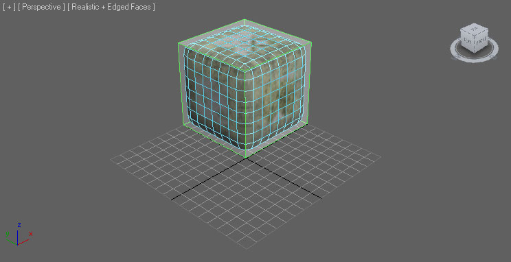
- File 메뉴에서 Export Selected (또는 선택에 상관없이 씬의 모든 것을 익스포트하려면 Export All) 선택

- 메시를 익스포트할 FBX 파일의 위치와 이름을 선택하고
 버튼
버튼
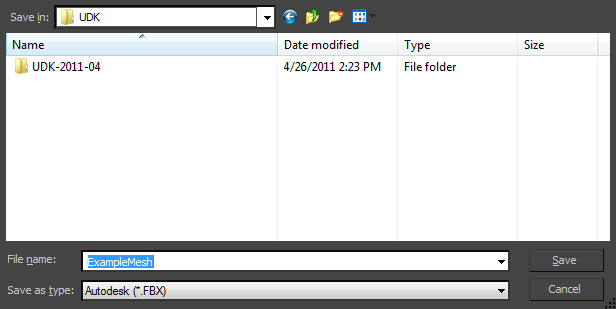
- FBX Export 대화창에 옵션을 적절히 설정한 다음
 버튼을 눌러 메시를 포함하는 FBX 파일 생성
버튼을 눌러 메시를 포함하는 FBX 파일 생성

- 뷰포트에서 익스포트할 메시 선택

- File 메뉴에서 Export Selected (또는 선택과 무관하게 씬의 모든 것을 익스포트하려면 Export All) 선택

- 메시를 익스포트할 FBX 파일 위치와 이름을 선택한 다음 FBX Export 대화창에서 옵션을 적절히 설정하고
 버튼을 눌러 메시가 포함된 FBX 파일 생성
버튼을 눌러 메시가 포함된 FBX 파일 생성
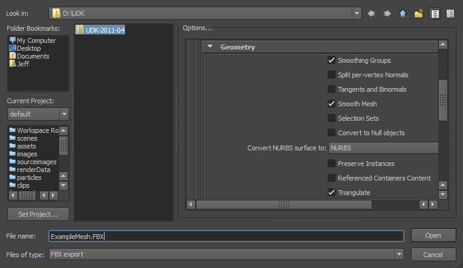
메시 임포트
- 콘텐츠 브라우저에서
 버튼을 누릅니다. 열리는 파일 브라우저에서 임포트하려는 FBX 파일 위치로 이동하여 선택합니다. 주: 드롭다운에
버튼을 누릅니다. 열리는 파일 브라우저에서 임포트하려는 FBX 파일 위치로 이동하여 선택합니다. 주: 드롭다운에  버튼을 선택하면 필터링이 가능합니다.
버튼을 선택하면 필터링이 가능합니다.
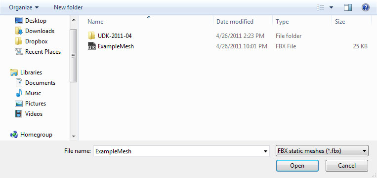
- Import 대화창에 옵션을 적절히 설정합니다. 대부분의 경우는 디폴트로 충분할 것입니다. 모든 세팅에 대한 세부사항은 FBX Import 대화창 부분을 참고하십시오.
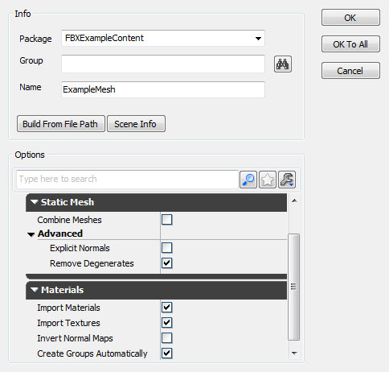
-
 버튼을 눌러 메시를 임포트합니다. 프로세스가 성공하면 콘텐츠 브라우저에 메시, 머티리얼, 텍스처 결과물이 표시됩니다.
버튼을 눌러 메시를 임포트합니다. 프로세스가 성공하면 콘텐츠 브라우저에 메시, 머티리얼, 텍스처 결과물이 표시됩니다.
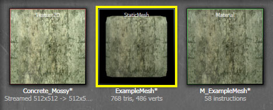
스태틱 메시 에디터에서 임포트된 메시를 불러와 콜리전 표시를 켜 보면, 제대로 임포트됐는지 확인해 볼 수 있습니다.
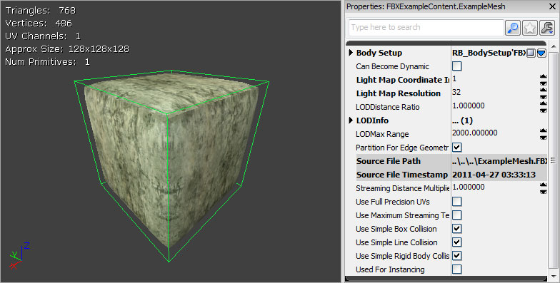
스태틱 메시 LOD
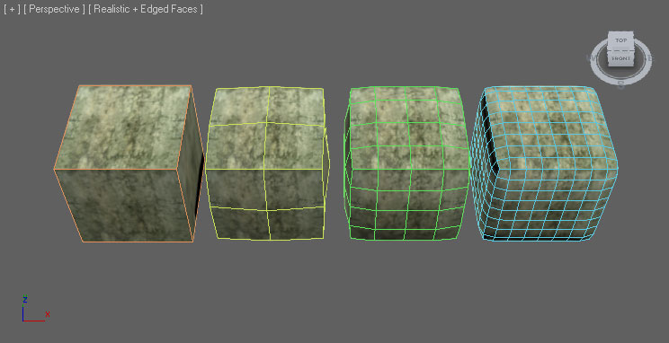
이러한 LOD 메시를 임포트/익스포트하는 데도 FBX 파이프라인을 쓸 수 있습니다.LOD 셋업
일반 일반적으로 LOD 는 최고 디테일의 베이스 메시에서 최저 디테일의 LOD 메시까지 다양한 복잡도의 모델을 만드는 방식으로 이루어집니다. 이들 모두 동일한 기준점에 정렬시키고 같은 공간을 차지하도록 해야 합니다. 각 LOD 메시마다 완전 다른 머티리얼을, 개수까지도 다르게 해서 할당할 수도 있습니다. 즉 베이스 메시에서는 머티리얼을 여러개 사용하여 원하는 만큼의 디테일을 내도록 하면서도, 디테일이 낮은 메시에서는 알아보기 힘드니 머티리얼을 하나만 쓸 수도 있다는 뜻입니다. 3dsMax- 메시를 전부 (순서에 관계 없이 베이스와 LOD도) 선택한 다음 Group 메뉴의 Group 명령을 선택합니다.

- 열리는 대화창에 새 그룹 이름을 입력한 다음
 버튼을 눌러 그룹을 만듭니다.
버튼을 눌러 그룹을 만듭니다.

-
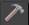
버튼을 클릭하여 Utilities 패널을 띄우고 Level of Detail 유틸리티를 선택합니다. 주: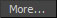
버튼을 클릭하고 목록에서 선택해야 할 수도 있습니다.

- 그룹을 선택한 상태로,
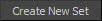
버튼을 클릭하여 새 LOD 세트를 만들고, 선택된 그룹에 있는 메시를 그 안에 추가합니다. 메시가 복잡도에 따라 자동으로 정렬됩니다.
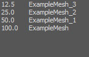
- 베이스에서 마지막 LOD 메시까지 순서대로 모든 메시를 선택합니다. 복잡도 순서를 올바르게 하기 위해서 필수입니다. 그런 다음 Edit 메뉴에서 Level of Detail > Group 명령을 선택합니다.

- LOD Group 아래 모든 메시가 그룹으로 되어 있을 것입니다.
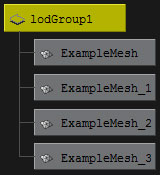
LOD 익스포트
스태틱 메시 LOD 를 익스포트하려면: 3dsMax- LOD Set 와 콜리전 지오메트리를 이루는 메시 그룹을 선택합니다.
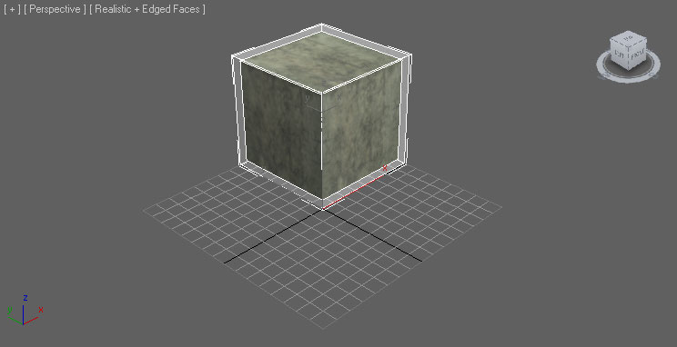
- 위의 메시 익스포트 부분에서 설명한 베이스 메시 익스포트 절차를 그대로 따릅니다. FBX 익스포터 프로퍼티에서 애니메이션 익스포트를 켰는지 확인하십시오. LOD 를 익스포트하는 데 필요합니다.
- LOD Group 과 콜리전 지오메트리를 선택합니다.

- 위의 메시 익스포트 부분에서 설명한 베이스 메시 익스포트 절차를 그대로 따릅니다. FBX 익스포터 프로퍼티에서 애니메이션 익스포트를 켰는지 확인하십시오. LOD 를 익스포트하는 데 필요합니다.
LOD 임포트
스태틱 메시 LOD 는 콘텐츠 브라우저 안에 베이스 메시와 함께 임포트해 오거나, 스태틱 메시 에디터를 통해 개별적으로 임포트해도 됩니다. LOD 를 가진 메시- 콘텐츠 브라우저에서 버튼을 클릭합니다. 열리는 파일 브라우저에서 임포트하려는 FBX 파일로 이동하여 선택합니다. 주: 드롭다운에서 버튼을 선택하여 무관한 파일을 걸러낼 수 있습니다.
- Import 대화창 세팅을 적절히 해 줍니다. Import LODs 가 켜져 있으니 디폴트 상태로도 충분할 것입니다. 주: LOD 를 임포트할 때 임포트한 메시의 이름은 디폴트 명명 규칙을 따릅니다. 모든 세팅에 대한 세부 정보는 FBX 임포트 대화창 부분을 참고하시기 바랍니다.
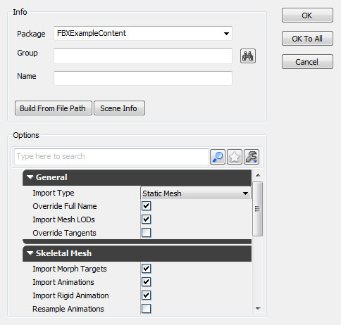
- 버튼을 클릭하여 메시와 LOD 를 임포트합니다. 성공했다면 메시, 머티리얼(들), 텍스처(들) 결과물이 콘텐츠 브라우저에 표시됩니다. 메시 아래 텍스트 4 LODs 로 확인할 수 있습니다.

스태틱 메시 에디터에서 임포트한 메시를 불러온 다음 툴바의
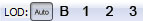
버튼을 사용하여 둘러볼 수 있습니다.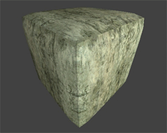
- 콘텐츠 브라우저에서 베이스 메시를 더블클릭하거나 우클릭한 다음 스태틱 메시 에디터를 사용하여 편집... 을 선택하여 스태틱 메시 에디터로 엽니다.
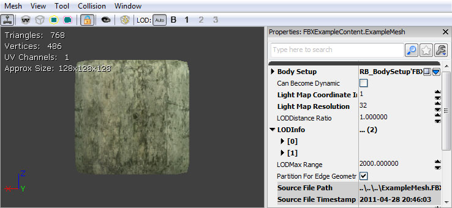
- 메시 메뉴에서 메시 LOD 임포트... 를 선택합니다.
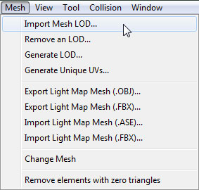
- 파일 브라우저에서 LOD 메시가 담긴 FBX 파일 위치로 이동하여 선택합니다. 주: 파일 포맷을
 로 설정하지 않으면 파일이 안보일 수도 있습니다.
로 설정하지 않으면 파일이 안보일 수도 있습니다.
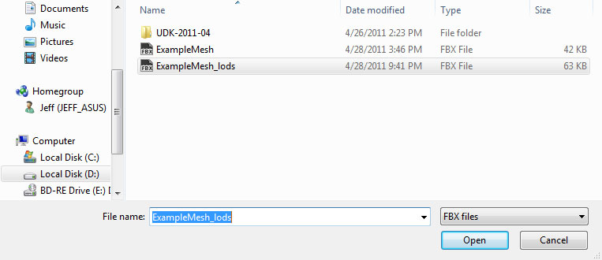
- Import LOD 대화창에서 드롭다운 메뉴를 통해 임포트하려는 메시의 LOD 레벨을 선택합니다. 그런 다음
 버튼을 눌러 LOD 메시를 임포트합니다.
버튼을 눌러 LOD 메시를 임포트합니다.
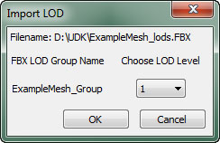
- 임포트 프로세스 결과가 뜰 것이며, 그 LOD 임포트에 성공했다면
 툴바 버튼이 켜질 것입니다.
툴바 버튼이 켜질 것입니다.

- 임포트하려는 LOD 메시마다 이 프로세스를 반복합니다.
- 모든 LOD 메시를 임포트하고난 후 툴바의 버튼을 사용하면 LOD 메시를 미리볼 수 있습니다.